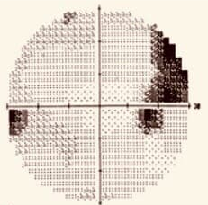
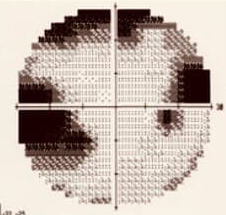

半側忽略訓練系統介紹
-
半側忽略介紹
- 半側忽略症患者會對某半側的事物常常視而不見，尤其是當左右兩側都有感官刺激出現時，患者不覺得半側有東西。
半側忽略主要是基於注意力上的缺損，並非視力上，半側忽略好發於右側大腦損傷的病人上，其中又以右大腦中風為最大宗，進而造成病患
忽略其左邊的空間和肢體，也有較小機率發生在左側大腦損傷的病人上。


-
製作本系統目的
- 製作本系統的目的是，半側忽略患者在長期忽略的狀況下，會對生活上造成致命的麻煩，
希望能利用本系統的訓練方式來對半側忽略患者生活上有更好的改善。
-
系統介紹
- 首先進行校正
先開啟使用者的攝像頭，來進行9個點的校正，確認校正後都是準確的，就開始測驗。
- 再進行前測刪除測驗
有一分鐘的時間，來找尋鈴鐺，盯著鈴鐺即可以進行刪除。
- 修改版VFT測驗
找尋畫面上隨機出現的直線，在直線上找中點，系統會提示說離中點差了多少距離，進而改善患者的視野範圍。
- 進行刪除測驗後測
有一分鐘的時間，來找尋鈴鐺，盯著鈴鐺即可以進行刪除。
- 前測和後測結果展示
結果展示可以清楚知道，在進行VFT測驗之後改善的結果。
- 返回初始畫面
點擊返回按鈕，即可返回初始畫面。